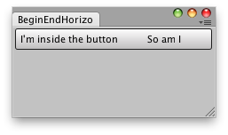

EditorGUILayout.EndHorizontal
public static void EndHorizontal();
Description 描述
Close a group started with BeginHorizontal.
See Also: EditorGUILayout.BeginHorizontal

Horizontal Compound group.
using UnityEngine; using UnityEditor;
// Create a Horizontal Compound Button
public class EndHorizontalCS : EditorWindow { [MenuItem("Examples/Begin-End Horizontal usage")] static void Init() { EditorWindow window = GetWindow(typeof(EndHorizontalCS)); window.Show(); }
void OnGUI() { Rect r = EditorGUILayout.BeginHorizontal("Button"); if (GUI.Button(r, GUIContent.none)) Debug.Log("I got pressed"); GUILayout.Label("I'm inside the button"); GUILayout.Label("So am I"); EditorGUILayout.EndHorizontal(); } }